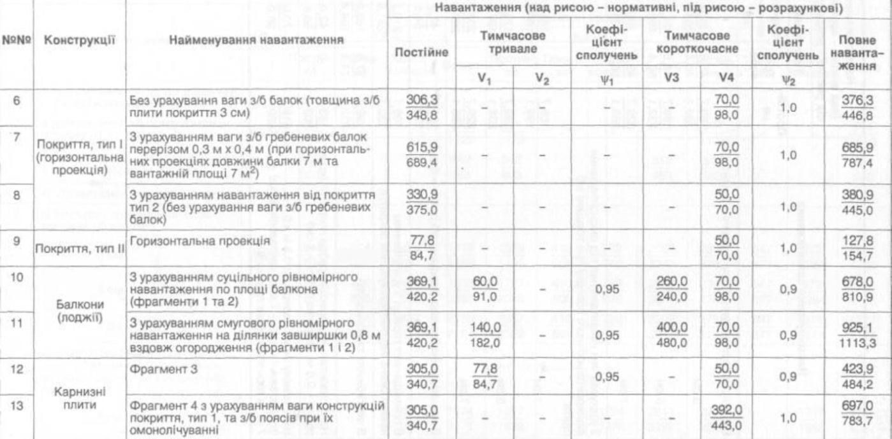

створити веб-сторінку з таблицею, що відповідає шостому варіанту

| №№ | Конструкції | Найменування навантаження | Навантаження (над рисою – нормативні, під рисою – розрахункові) | |||||||
|---|---|---|---|---|---|---|---|---|---|---|
| Постійне | Тимчасове тривале |
Коефі- цієнт сполучень |
Тимчасове короткочасне |
Коефі- цієнт сполучень |
Повне наванта- ження |
|||||
| V1 | V2 | ψ1 | V3 | V4 | ψ2 | |||||
| 6 | Покриття, тип I (горизонтальна проекція) |
Без урахування ваги з/б балок (товщина з/б плити покриття 3 см) | 50 | - | - | - | - | 50 | 50 | 50 |
| 7 | З урахуванням ваги з/б гребеневих балок перерізом 0,3 м х 0,4 м (при горизонтальних проекціях довжини балки 7 м та вантажній площі 7 м2) | 50 | - | - | - | - | 50 | 50 | 50 | |
| 8 | З урахуванням навантаження від покриття тип 2 (без урахування ваги з/б гребеневих балок) | 50 | - | - | - | - | 50 | 50 | 50 | |
| 9 | Покриття, тип II | Горизонтальна проекція | 50 | - | - | - | - | 50 | 50 | 50 |
| 10 | Балкони (лоджії) |
З урахуванням суцільного рівномірного навантаження по площі балкона (фрагменти 1 та 2) | 50 | 50 | - | 50 | 50 | 50 | 50 | 50 |
| 11 | З урахуванням смугового рівномірного навантаження на ділянки завширшки 0,8 м вздовж огородження (фрагменти 1 і 2) | 50 | 50 | - | 50 | 50 | 50 | 50 | 50 | |
| 12 | Карнизні плити |
Фрагмент 3 | 50 | 50 | - | 50 | - | 50 | 50 | 50 |
| 13 | Фрагмент 4 з урахуванням ваги конструкцій покриття, тип 1, та з/б поясів при їх омонолічуванні | 50 | - | - | - | - | 50 | 50 | 50 | |